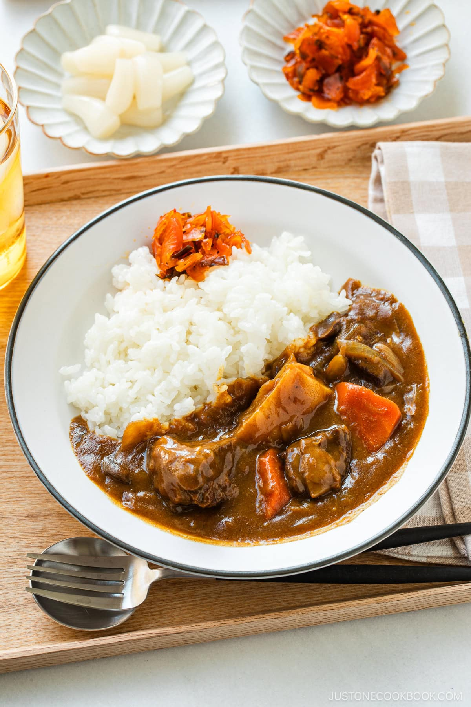

Curry Rice

The British Royal Navy first introduce Indian-style curry to Japan some 150 years ago during the Meiji Restoration (1868–1912). Over time, the Japanese adapted the dish to make it milder and sweeter with a thick, rich gravy that’s ideal to serve with Japanese steamed rice. By the early 20th century, this Japanese curry rice (kare raisu, カレーライス) had become a mainstream staple; it’s now widely enjoyed in family restaurants, food halls, school cafeterias, and Japanese households throughout the country.
Ingredients
- 2 onions (large; 1¼ lb, 567 g)
- 2 Tbsp unsalted butter (divided)
- 2 Tbsp neutral oil (divided)
- 1 russet potato (11 oz, 309 g)
- 1 carrot (large; 8 oz, 230 g)
- 6 cremini mushrooms (2.6 oz, 80 g)
- ½ tsp ginger (grated, with juice)
- 1 clove garlic (minced)
- 1¼ lb boneless beef chuck roast
- ¼ tsp Diamond Crystal kosher salt
- ¼ tsp freshly ground black pepper
- 1 Tbsp all-purpose flour (plain flour)
- ½ cup red wine
For the Curry Sauce
- ½ Tbsp Japanese curry powder
- 1 Tbsp tomato paste (or ketchup)
- 4 cups beef stock/broth (1 QT; for lower sodium, use water only or half stock and half water)
- ⅛ apple (plus more for sweetness; I use Fuji apple; or substitute 1 Tbsp honey or mango chutney)
- 1 Tbsp Worcestershire sauce
- 2 Tbsp milk
- 1 bay leaf
- 1 package Japanese curry roux (7–8.4 oz, 200–240 g; or make my Japanese Curry Roux)
For Serving
- 8 servings cooked Japanese short-grain rice (1–1½ cups, 180–270 g per serving)
- fukujinzuke (Japanese red pickled vegetables) (optional; make my Homemade Fukujinzuke)
- rakkyo (Japanese pickled scallion) (optional)
Instructions
- Gather all the ingredients. Please note that 4 rice cooker cups (720 ml, 3 cups, 600 g) of uncooked rice yield 8¾ cups (1320 g) of cooked rice, enough for 5–8 servings for Japanese curry rice. See how to cook short-grain rice with a rice cooker, pot over the stove, Instant Pot, or donabe.
To Caramelize the Onions
- Cut 2 onions into thin slices.
- Preheat a large heavy-bottomed pot (I used a 5.5 QT Staub Dutch oven) on medium heat. When the pot is hot, add half of the 2 Tbsp unsalted butter, half of the 2 Tbsp neutral oil, and the onions to the pot. Stir to coat the onions.
- Sauté the onions, stirring occasionally, for about 20–25 minutes. Meanwhile, move on to the next step (but stir the onions and keep an eye on them). When the onions are wilted, reduce the stove‘s heat to medium low (as they tend to burn quickly) and keep cooking. Once the onions are tender, translucent, and a bit caramelized, remove the pot from the heat and set aside until the beef is done searing.
To Prepare the Other Ingredients
- While the onions are sautéing, peel and cut 1 russet potato in thirds.
- Then, cut each piece in half or quarters. To remove the starch, soak the potato pieces in a bowl of water for 15 minutes or until it's time to add them to the pot later on.
- Peel and cut 1 carrot diagonally while rotating it a quarter turn between slices to make random cuts. We call this cutting technique rangiri in Japanese.
- Clean 6 cremini mushrooms and cut them into thin slices. Tip: I use a pastry brush and avoid washing mushrooms as they absorb moisture. However, it‘s okay to quickly rinse them.
- Grate the ginger (I use a ceramic grater) and measure ½ tsp ginger (grated, with juice). Set aside. Then, mince 1 clove garlic (I skip it here as I use a garlic press later).
- Cut 1¼ lb boneless beef chuck roast into 1½-inch (3.8 cm) cubes. Tip: I recommend chuck roast for its tenderness and higher quality. While stew beef is slightly more economical, I don't recommend it because it‘s made up of bits and pieces leftover from carving various cuts, so the meat is not as tender.
- Lightly sprinkle the beef with ¼ tsp Diamond Crystal kosher salt and ¼ tsp freshly ground black pepper. Then, lightly coat the meat on all sides with 1 Tbsp all-purpose flour (plain flour).
To Sear the Beef
- Preheat a carbon steel pan or cast iron skillet on medium-high heat. When it's hot, add the remaining half of the oil and butter. Cook the beef in 2 batches. Add the beef cubes in a single layer, making sure not to crowd the skillet; otherwise, the excess moisture in the pan will end up steaming the meat.
- Sear the beef cubes (do not move them) on one side until brown and crusty, about 3–4 minutes, then turn them over to sear the other sides. The meat will release itself from the pan when the surface is seared nicely. Transfer the seared meat to a plate and work on the next batch.
- Once you‘ve seared and transferred all the meat, deglaze the pan. Add ½ cup red wine to the pan and use a wooden blunt-end spatula to scrape and release the flavorful browned bits (the “fond“) that are stuck to the bottom of the pan. Turn off the heat and set aside.
To Cook the Curry
- By now, the onions should be caramelized and ready for the next step. Reheat the pot with the onions on the stove over medium heat. Add the minced garlic (I use a garlic press) and grated ginger.
- Add ½ Tbsp Japanese curry powder and 1 Tbsp tomato paste and sauté for 1 minute.
- Add the seared beef, any juices from the plate, and the deglazed pan liquid to the pot and mix them all together. Cook, stirring occasionally, for 3 minutes, letting the alcohol from the wine evaporate.
- Add the carrots and mushrooms and mix them all together. Add 4 cups beef stock/broth (or half stock/half water) to just cover the ingredients. Cover the pot with a tight-fitting lid and bring it to a boil. Tip: Compared to Le Creuset, I think Staub lids create a great seal that prevents evaporation.
- Once boiling, skim off the scum from the broth's surface. I add water to a 2-cup measuring cup and dip my fine-mesh skimmer in it to rinse off the debris. For full instructions, see my post How To Skim Off the Scum and Fat from Soups and Stocks.
- Grate ⅛ apple and add it to the broth. Then, add 1 Tbsp Worcestershire sauce and 2 Tbsp milk.
- Add 1 bay leaf and cover the pot with the tight-fitting lid. Simmer on low heat until the meat is tender, about 1 hour and 45 minutes. If you do not have a tight-fitting lid, you may need to add more beef stock or water, enough to just cover the ingredients. Tip: To get tender beef, 2 hours of simmering is standard.
- When the beef is tender, add the potatoes, close the lid, and simmer for 15 minutes until the potatoes are cooked through.
- When the potatoes are tender (and a wooden skewer can pierce through the potato), discard the bay leaf and turn off the heat.
- Add up to 1 package Japanese curry roux off the heat. Put 1–2 cubes of roux in a ladleful of cooking liquid, dissolve it with a spoon or chopsticks, and stir it into the broth to incorporate. Repeat with the remaining roux. Taste as you go and adjust the amount; you may not need to use all of the roux (you can refrigerate or freeze the extra for another use). After adding the curry roux, simmer on the lowest heat, stirring often, for 3–5 minutes until the sauce thickens. Be careful not to burn the sauce! If it‘s too thick, add water to dilute. If it‘s too thin and soupy, uncover the pot and simmer a bit longer.
To Serve
- Serve the cooked Japanese short-grain rice on one half of individual plates or shallow bowls. Spoon the beef curry on the other half. Top with optional fukujinzuke (Japanese red pickled vegetables) and rakkyo (Japanese pickled scallion).
To Store
- Keep the leftovers in an airtight glass container (so no stains!) and store it in the refrigerator for up to 3 days or in the freezer for a month. The texture of the potatoes will change in the freezer, so remove them before freezing. Defrost the frozen curry in the refrigerator for 24 hours before you want to reheat it. If you have any extra roux, keep it in an airtight container and store in the refrigerator or freezer for 1–3 months.
To Reheat
- Leftover curry sauce will thicken into a paste as it cools, so it tends to burn while reheating. To avoid this, stir ½ cup (120 ml) water or more into the leftover sauce until loosened. Then, gently reheat it on low heat. If the sauce seems thin, continue heating with the lid off to reduce the sauce.